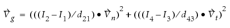
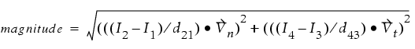

Type: Tagging Commands. Used by Calibre WORKbench, Calibre OPCpro, Calibre ORC, and Calibre PRINTimage.
Tags fragments based on aerial image properties.
newTag tagName -how IMAGE filterTag [NOT]
[OUTOFBOUNDS]
[IMAGE intensity_constraint DISTANCE distance_constraint]
[SLOPE slope_constraint [LOG | {YVAL thresh}]]
[C factor_constraint]
[IMAX imax] [IMIN imin] [CHECKMODEL]
[CONTRAST con_constraint]
[THRESHOLD threshold_constraint]
[EXTREMA_DISTANCE ex_constraint]
[GRADIENT_ANGLE constraint]
[GRADIENT_ABSANGLE constraint]
[GRADIENT_MAG constraint]
[USE_MODEL_DEFINITIONS | UMD]
[MEEF constr [DELTA delta]]
[QUAD_INTERP]
[DENSITY kernel constraint]
A required argument specifying the name for the new tag.
A required argument specifying the tag name for the set of fragments whose aerial image is evaluated against the specified constraints.
An optional keyword complementing all subsequent constraints, instructing the application to tag those fragments that do not meet the specified constraints.
This optional argument determines when OPC moves outside the parameter space of the resist model. If this keyword is specified, then it is a user error to specify any constraint on the image properties through this newTag command.
The resist model has the capability to bound the image properties which by default are unbounded. After OPC, the fragments that do not lie within these constraints are tagged by the newTag command.
A set of optional keyword-value pairs used to tag those fragments in the filterTag whose aerial image intensity is within the given intensity_constraint over the entire range of the distance_constraint.
The IMAGE keyword defines the constraint on allowed aerial image intensity values. The user-supplied constraint, intensity_constraint, must be specified as an interval of intensity values expressed as non-negative real numbers. Values are in units of “normalized aerial image”, in which the full field exposure yields an image value of one.
The DISTANCE keyword defines the constraint on the spatial range to check. The user-supplied constraint, distance_constraint, must be specified in microns as an interval of real numbers. Negative values represent distances inside the polygon, positive values represent distances outside the polygon.
A set of optional keyword-value pairs used to tag those fragments with an aerial image slope that satisfies slope_constraint. The slope being evaluated is the slope along the cutline for the fragment.
The SLOPE keyword defines the constraint on allowed slope values, and is written as an interval of Dintensity-per-micron values.
The LOG keyword instructs the application to use the LOG slope, and cannot be used with YVAL.
The YVAL keyword instructs the application to evaluate the slope at the position where the image intensity matches the specified threshold. If YVAL thresh is omitted, the application evaluates the maximum slope along the cutline.
An optional keyword-value pair used to tag those fragments having an aerial image factor that satisfies the constraint factor_constraint.
An optional keyword-value pair used to tag those fragments having a maximum intensity value that satisfies the constraint imax.
An optional keyword-value pair used to tag those fragments having an minimum intensity value for that satisfies the constraint imin.
An optional keyword that checks whether a constrained parameter for IMAGE is defined in the VT5 model. The parameters which can be checked are IMIN, IMAX, SLOPE, and C. If the parameter is not defined, the run halts with an error.
If this keyword is not used, the run continues even if the constrained parameter is not defined. Instead, the parameter is treated as having a value of 0 for all fragments.
An optional keyword-value pair used for tagging based on contrast.
You compute the con_constraint for each site using the following formula:
contrast = {max(I)–min(I)} ⁄ {max(I)+min(I)}
For example:
newTag low_contrast_ends -how IMAGE line_end CONTRAST < 0.7 An optional keyword-value pair you use for tagging fragments having an image threshold within the specified constraint. You obtain the constraint by evaluating the resist model at the given fragment and observing its predicted threshold.
An optional keyword-value pair you use with IMAX, IMIN, or CONTRAST to define a search window for the calculations. This option requires a closed distance interval as an argument, such as the following:
> -0.1 < 0.1 It is required under the following circumstances:
tagging based on CONTRAST
tagging based on intensity (IMIN or IMAX) using a resist model that is version 3 or later (VT5).
It is recommended under the following circumstance:
tagging based on IMIN or IMAX using a resist model that is version 2 or earlier.
For example:
newTag tagName -how IMAGE IMAX imax_constraint ... \
EXTREMA_DISTANCE ex_constraintAn optional argument specifying the image gradient magnitude in units of 1/user units (microns). It can only be used with VT5 version 3 resist models having curvature (even if the coefficient is 0).
An optional argument specifying the image gradient angle with respect to the fragment which owns it. Valid values are from 0 to 360. It can only be used with VT5 version 3 resist models having curvature (even if the coefficient is 0).
An optional argument specifying the absolute value of the angle, in the range 0 to 180. It can only be used with VT5 version 3 resist models having curvature (even if the coefficient is 0).
Used for tagging image properties consistent with the VT5 definitions currently in use. May also be specified as UMD.
When specified, the definitions of the IMAX, IMIN, C, SLOPE, and, consequently, CONTRAST (which uses IMAX and IMIN), are used exactly as the VT5 model would use them.
USE_MODEL_DEFINITIONS cannot be used with QUAD_INTERP, LOG, YVAL, or EXTREMA_DISTANCE.
An optional argument, required when using MEEF tagging, defining a range of MEEF values. All fragments in filterTag meeting all other IMAGE conditions and having a MEEF within this range are tagged as tagName.
An optional argument used in calculating the MEEF for the specified tag. The delta, specified in user units, can be a positive or a negative number. A negative value corresponds to shifting the fragment inwards into the polygon, and a positive value corresponds to shifting the fragment outwards from the polygon.
When specified, this value overrides the global DELTA set in the MATRIX_OPC block.
When not specified, this argument defaults to the global DELTA set in the MATRIX_OPC block.
An optional keyword for calculating IMAX, IMIN, and CONTRAST using a 3-point quadratic interpolation of the sample image values. By default, the Litho tools compute IMIN, IMAX, and CONTRAST using the discrete sampled points, with no interpolation.
If you use the QUAD_INTERP option, you must specify it last.
An optional keyword for the IMAGE tagging method that tags fragments based on the density kernels. Any fragments from the tag set filterTag that match the constraint for density kernels are selected and added to tagName. For example:
newTag d1tag -how IMAGE all density D1 >= 0.5This example tags all fragments with a D1 density greater than or equal to 0.5 and is placed in the tag set d1tag.
This newTag method tags fragments in the filterTag based on image intensity, IMAX, IMIN, aerial image factor, or slope. At least one constraint must be specified. Any unspecified constraint defaults to UNCONSTRAINED.
For VT5 models, the valid arguments are IMAX, IMIN, SLOPE, and Curvature.
Image gradient tagging allows tagging for the gradient of the aerial image on each site. Gradient tagging produces the gradient vector, gradient angle, absolute gradient angle and magnitude.
An analogy for a gradient magnitude is a contour-line topographical map, where contour lines that are closer together indicate a steeper incline or gradient than contour lines that are spread further apart. In this case, the contour lines indicate intensity at different points.
The gradient is calculated using a mini-grid centered at the site center value with four simulation points (Figure 1 illustrates the four simulation points). The image gradient is a vector sum, Vg, derived from the Vector Normal (the direction of the site), Vn, and Vector Tangent (the tangential direction of the site), Vt.
The spacing between the simulated grid points is equal to the sampleSpacing value of the resist model. The center location of the four points is along the contour created by the referenceThreshold in the VT5 model.
Based on this information, the gradient vector Vg is calculated as follows:

where I is the Intensity and d is the distance between two points on the four-point grid (for example, d21 is distance between grid point 2 to point 1 as represented in Figure 1).
The image gradient magnitude, as represented in units of 1/user units (microns), is derived as follows:

You can define as many MEEF related tags as needed. However, each MEEF tagging command in the setup file that uses a different DELTA triggers a full intensity calculation pass. You can minimize the impact of using multiple DELTA values by grouping all MEEF tagging commands with the same DELTA together. This speeds up simulation.
For example:
newTag t1 -how IMAGE all MEEF > 1 DELTA 0.01
newTag t2 -how IMAGE all MEEF > 1 DELTA -0.01
newTag t3 -how IMAGE all MEEF < 2 DELTA 0.01This causes the intensity to be calculated for all sites 3 times. The following modification results in only 2 simulation passes.
newTag t1 -how IMAGE all MEEF > 1 DELTA 0.01
newTag t3 -how IMAGE all MEEF < 2 DELTA 0.01
newTag t2 -how IMAGE all MEEF > 1 DELTA -0.01The reason this arrangement is more efficient is that the tagging operations are executed in the order seen in the setup file.
Check for line-end bridging by observing if the aerial image is above the threshold of 0.3 for the entire range of 0 to 0.1 microns from the line end.
newTag tag2 -how image line_end IMAGE > 0.3 DISTANCE >0 <=0.1 This example tags all the fragments that are outside the bounds of slope and Imin.
newTag t3 -how IMAGE all OUTOFBOUNDS SLOPE IMINNo constraints on the other keywords may be specified if you are using the OUTOFBOUNDS keyword. See also the next example.
If bounds are specified in the resist file as:
bound SLOPE 0 3.23801There are two ways of displaying the fragments that are outside the bounds of the resist file:
newTag t3 -how IMAGE all NOT slope >= 0 <= 3.23801
newTag t3 -how IMAGE all OUTOFBOUNDS SLOPE